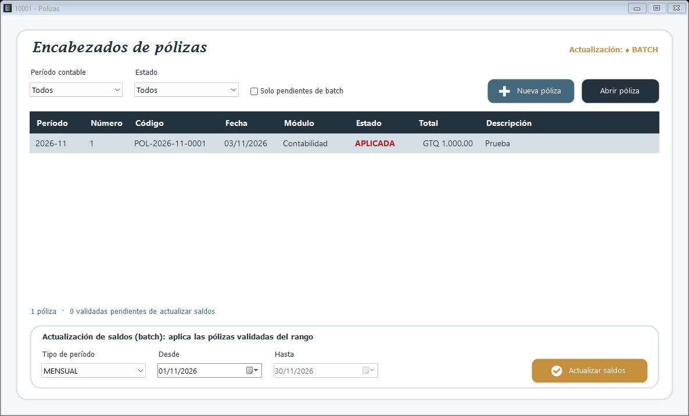

Lista los encabezados de todas las pólizas: las locales de Contabilidad y las que envían los demás módulos. Desde aquí se crea o se abre cada póliza y se actualizan los saldos de las pólizas validadas.

Período contable y Estado limitan la lista. Solo pendientes de batch deja solo las pólizas validadas que todavía no han actualizado saldos. El contador de abajo indica cuántas pólizas se muestran.
1. Presione Nueva póliza para capturar una póliza nueva, o seleccione una fila y presione Abrir póliza (también puede hacer doble clic).
2. Se abre la ventana de captura (10006), descrita en la página Captura de pólizas.
La etiqueta de arriba indica si el módulo trabaja en LINEA o en BATCH. En BATCH, las pólizas validadas no mueven saldos hasta que se ejecuta este proceso:
1. Elija el Tipo de período (anual, mensual, semanal o rango) y el rango Desde - Hasta.
2. Presione Actualizar saldos y confirme.
3. Las pólizas del rango pasan a APLICADA y sus importes se suman a las cuentas del mes y de los meses siguientes.
No se pueden registrar ni aplicar pólizas en un período cerrado.